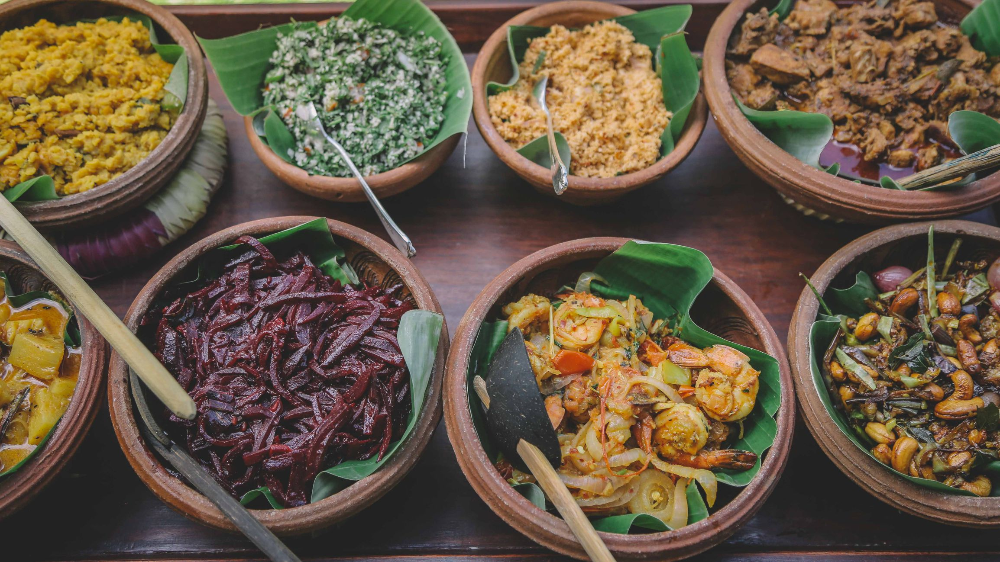

Sri Lanka is a multicultural country that has various famous dishes. It's a given that these dishes are rich with spice and flovour because Sri Lanka is a tropical country that grows it's own spices and ingrediants. Lets look into some of the famous dishes in Sri Lanka and how to preapare them at your own home.
